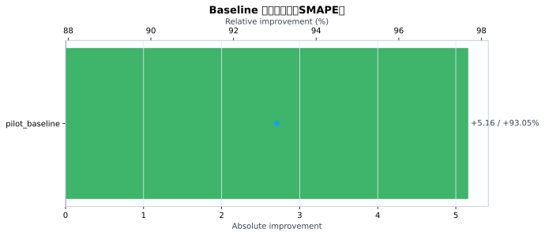
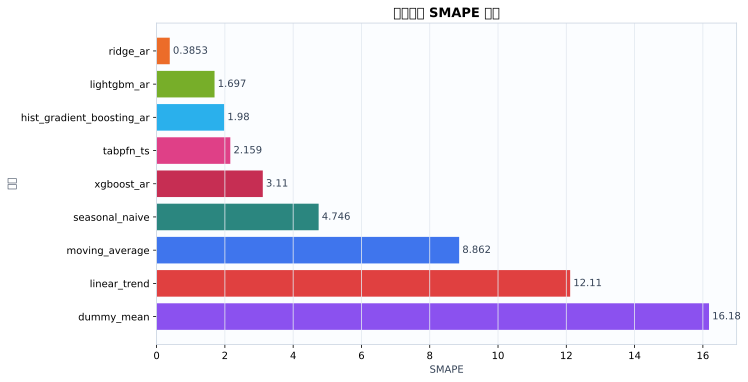
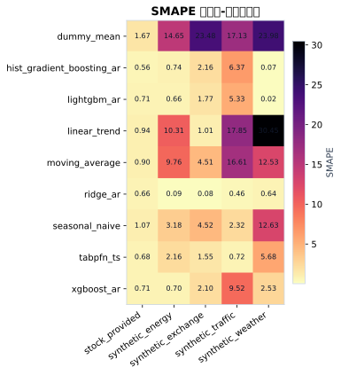
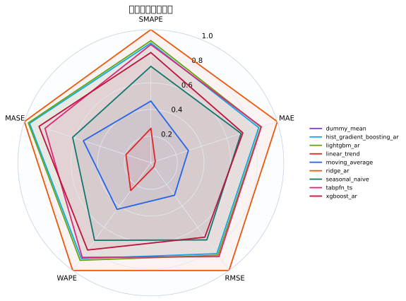
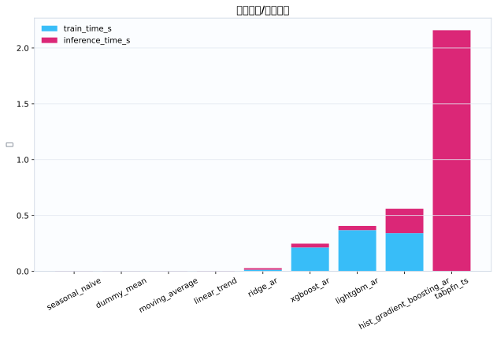
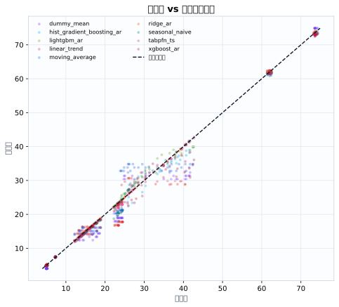
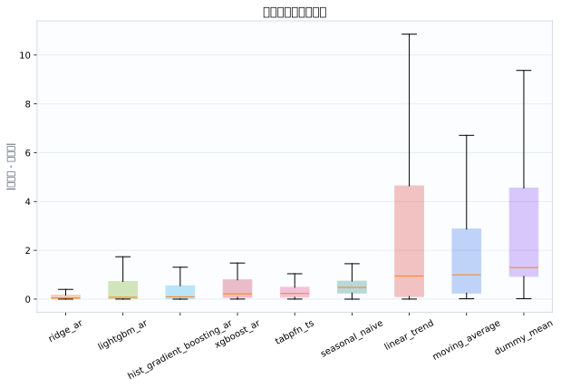

数据集5
模型9
指标行数45
预测行数3024
结论摘要
- 主指标 SMAPE 下，当前 run 的最佳模型是 ridge_ar，平均值为 0.3853。
- 相对 baseline pilot_baseline，当前最佳模型在 SMAPE 上提升 93.05% （absolute=+5.16）。
核心指标卡片
SMAPE
0.3853
最佳模型: ridge_ar
GPU_MEMORY_MB
0
最佳模型: dummy_mean
INFERENCE_TIME_S
0.003217
最佳模型: seasonal_naive
MAE
0.1071
最佳模型: ridge_ar
MASE
0.3013
最佳模型: ridge_ar
MSE
0.02778
最佳模型: ridge_ar
RMSE
0.1304
最佳模型: ridge_ar
TRAIN_TIME_S
0
最佳模型: tabpfn_ts
Baseline 对比
| baseline | metric | current_model | current_value | baseline_model | baseline_value | absolute_difference | relative_improvement_pct |
|---|---|---|---|---|---|---|---|
| pilot_baseline | smape | ridge_ar | 0.3853 | ridge_ar | 5.545 | 5.16 | 93.05 |
动态交互图表
指标排名动态图
残差直方图
效率-精度散点图
数据集排名轨迹
Matplotlib 可视化图表
Baseline 改变量图
{kind=link}

Baseline/模型平均指标柱状图
{kind=link}

数据集-模型热力图
{kind=link}

多指标雷达图
{kind=link}

运行时间图
{kind=link}

真实值-预测值散点图
{kind=link}

残差箱线图
{kind=link}

训练过程曲线
N/A：当前 run 目录未发现 loss/accuracy/TensorBoard/wandb 训练曲线文件。
错误分析与样本分析
当前支持预测任务的残差与真实-预测散点分析；分类 confusion matrix / ROC / PR 曲线需要真实分类输出后自动启用。
原始 Metrics
| run_id | model | dataset | domain | horizon | context_length | mse | mae | rmse | smape | wape | mase | train_time_s | inference_time_s | gpu_memory_mb |
|---|---|---|---|---|---|---|---|---|---|---|---|---|---|---|
| tabpfn_ts_20260528_155253 | dummy_mean | synthetic_energy | energy | 24 | 192 | 7.43 | 2.198 | 2.726 | 14.65 | 14.14 | 5.139 | 0.0004253 | 0.003669 | 0 |
| tabpfn_ts_20260528_155253 | seasonal_naive | synthetic_energy | energy | 24 | 192 | 0.2304 | 0.48 | 0.48 | 3.182 | 3.087 | 1.122 | 0.0003126 | 0.003311 | 0 |
| tabpfn_ts_20260528_155253 | moving_average | synthetic_energy | energy | 24 | 192 | 2.995 | 1.509 | 1.731 | 9.763 | 9.701 | 3.526 | 0.000283 | 0.003381 | 0 |
| tabpfn_ts_20260528_155253 | linear_trend | synthetic_energy | energy | 24 | 192 | 3.178 | 1.592 | 1.783 | 10.31 | 10.24 | 3.721 | 0.0003246 | 0.003808 | 0 |
| tabpfn_ts_20260528_155253 | ridge_ar | synthetic_energy | energy | 24 | 192 | 0.0002338 | 0.01308 | 0.01529 | 0.08819 | 0.08415 | 0.03059 | 0.01539 | 0.01454 | 0 |
| tabpfn_ts_20260528_155253 | hist_gradient_boosting_ar | synthetic_energy | energy | 24 | 192 | 0.05447 | 0.1266 | 0.2334 | 0.7424 | 0.8143 | 0.296 | 0.4184 | 0.2737 | 0 |
| tabpfn_ts_20260528_155253 | lightgbm_ar | synthetic_energy | energy | 24 | 192 | 0.04384 | 0.1123 | 0.2094 | 0.659 | 0.7221 | 0.2625 | 0.4129 | 0.04573 | 0 |
| tabpfn_ts_20260528_155253 | xgboost_ar | synthetic_energy | energy | 24 | 192 | 0.03113 | 0.1146 | 0.1764 | 0.6968 | 0.7368 | 0.2678 | 0.2446 | 0.03356 | 0 |
| tabpfn_ts_20260528_155253 | tabpfn_ts | synthetic_energy | energy | 24 | 192 | 0.1105 | 0.3191 | 0.3324 | 2.163 | 2.052 | 0.7458 | 0 | 3.281 | 0 |
| tabpfn_ts_20260528_155253 | dummy_mean | synthetic_traffic | traffic | 24 | 192 | 40.21 | 5.633 | 6.342 | 17.13 | 16.92 | 4.024 | 0.0006398 | 0.003423 | 0 |
| tabpfn_ts_20260528_155253 | seasonal_naive | synthetic_traffic | traffic | 24 | 192 | 0.6827 | 0.6836 | 0.8262 | 2.321 | 2.053 | 0.4883 | 0.0003083 | 0.003434 | 0 |
| tabpfn_ts_20260528_155253 | moving_average | synthetic_traffic | traffic | 24 | 192 | 36.68 | 5.467 | 6.056 | 16.61 | 16.42 | 3.905 | 0.0002862 | 0.003603 | 0 |
| tabpfn_ts_20260528_155253 | linear_trend | synthetic_traffic | traffic | 24 | 192 | 48.01 | 5.863 | 6.929 | 17.85 | 17.61 | 4.188 | 0.000288 | 0.003995 | 0 |
| tabpfn_ts_20260528_155253 | ridge_ar | synthetic_traffic | traffic | 24 | 192 | 0.03524 | 0.1588 | 0.1877 | 0.4581 | 0.4768 | 0.1134 | 0.01556 | 0.01473 | 0 |
| tabpfn_ts_20260528_155253 | hist_gradient_boosting_ar | synthetic_traffic | traffic | 24 | 192 | 5.201 | 2.067 | 2.281 | 6.371 | 6.207 | 1.476 | 0.3452 | 0.2238 | 0 |
| tabpfn_ts_20260528_155253 | lightgbm_ar | synthetic_traffic | traffic | 24 | 192 | 3.872 | 1.778 | 1.968 | 5.331 | 5.34 | 1.27 | 0.3916 | 0.03916 | 0 |
| tabpfn_ts_20260528_155253 | xgboost_ar | synthetic_traffic | traffic | 24 | 192 | 15.04 | 3.148 | 3.878 | 9.522 | 9.453 | 2.248 | 0.1891 | 0.03661 | 0 |
| tabpfn_ts_20260528_155253 | tabpfn_ts | synthetic_traffic | traffic | 24 | 192 | 0.1142 | 0.2379 | 0.3379 | 0.7206 | 0.7143 | 0.1699 | 0 | 2.157 | 0 |
| tabpfn_ts_20260528_155253 | dummy_mean | synthetic_weather | weather | 24 | 192 | 25.48 | 5.028 | 5.048 | 23.98 | 21.42 | 38.57 | 0.0003612 | 0.002397 | 0 |
| tabpfn_ts_20260528_155253 | seasonal_naive | synthetic_weather | weather | 24 | 192 | 8.652 | 2.771 | 2.941 | 12.63 | 11.8 | 21.25 | 0.0002986 | 0.002555 | 0 |
| tabpfn_ts_20260528_155253 | moving_average | synthetic_weather | weather | 24 | 192 | 7.871 | 2.771 | 2.806 | 12.53 | 11.8 | 21.25 | 0.0002888 | 0.002428 | 0 |
| tabpfn_ts_20260528_155253 | linear_trend | synthetic_weather | weather | 24 | 192 | 38.72 | 6.206 | 6.223 | 30.45 | 26.43 | 47.6 | 0.0002824 | 0.002669 | 0 |
| tabpfn_ts_20260528_155253 | ridge_ar | synthetic_weather | weather | 24 | 192 | 0.03013 | 0.151 | 0.1736 | 0.6403 | 0.6433 | 1.158 | 0.01057 | 0.009886 | 0 |
| tabpfn_ts_20260528_155253 | hist_gradient_boosting_ar | synthetic_weather | weather | 24 | 192 | 0.0005571 | 0.01734 | 0.0236 | 0.07341 | 0.07386 | 0.133 | 0.2408 | 0.1488 | 0 |
| tabpfn_ts_20260528_155253 | lightgbm_ar | synthetic_weather | weather | 24 | 192 | 2.807e-05 | 0.004254 | 0.005298 | 0.01807 | 0.01812 | 0.03263 | 0.2701 | 0.0262 | 0 |
| tabpfn_ts_20260528_155253 | xgboost_ar | synthetic_weather | weather | 24 | 192 | 0.4029 | 0.588 | 0.6348 | 2.527 | 2.504 | 4.51 | 0.1784 | 0.0262 | 0 |
| tabpfn_ts_20260528_155253 | tabpfn_ts | synthetic_weather | weather | 24 | 192 | 1.905 | 1.298 | 1.38 | 5.683 | 5.529 | 9.957 | 0 | 1.224 | 0 |
| tabpfn_ts_20260528_155253 | dummy_mean | synthetic_exchange | economics | 24 | 192 | 1.157 | 1.072 | 1.076 | 23.48 | 21.02 | 22.26 | 0.0004094 | 0.003288 | 0 |
| tabpfn_ts_20260528_155253 | seasonal_naive | synthetic_exchange | economics | 24 | 192 | 0.06304 | 0.2254 | 0.2511 | 4.522 | 4.422 | 4.682 | 0.0003048 | 0.003382 | 0 |
| tabpfn_ts_20260528_155253 | moving_average | synthetic_exchange | economics | 24 | 192 | 0.05886 | 0.2254 | 0.2426 | 4.506 | 4.422 | 4.682 | 0.0002887 | 0.003434 | 0 |
| tabpfn_ts_20260528_155253 | linear_trend | synthetic_exchange | economics | 24 | 192 | 0.003283 | 0.05138 | 0.0573 | 1.007 | 1.008 | 1.067 | 0.0002946 | 0.00371 | 0 |
| tabpfn_ts_20260528_155253 | ridge_ar | synthetic_exchange | economics | 24 | 192 | 2.152e-05 | 0.004257 | 0.004639 | 0.08348 | 0.0835 | 0.08841 | 0.01492 | 0.0145 | 0 |
| tabpfn_ts_20260528_155253 | hist_gradient_boosting_ar | synthetic_exchange | economics | 24 | 192 | 0.017 | 0.1094 | 0.1304 | 2.155 | 2.146 | 2.272 | 0.3458 | 0.2258 | 0 |
| tabpfn_ts_20260528_155253 | lightgbm_ar | synthetic_exchange | economics | 24 | 192 | 0.0119 | 0.09014 | 0.1091 | 1.771 | 1.768 | 1.872 | 0.3924 | 0.03742 | 0 |
| tabpfn_ts_20260528_155253 | xgboost_ar | synthetic_exchange | economics | 24 | 192 | 0.01642 | 0.1064 | 0.1281 | 2.096 | 2.087 | 2.21 | 0.2047 | 0.03813 | 0 |
| tabpfn_ts_20260528_155253 | tabpfn_ts | synthetic_exchange | economics | 24 | 192 | 0.006988 | 0.07876 | 0.0836 | 1.55 | 1.545 | 1.636 | 0 | 2.463 | 0 |
| tabpfn_ts_20260528_155253 | dummy_mean | stock_provided | finance | 24 | 192 | 0.5303 | 0.5415 | 0.7282 | 1.668 | 1.136 | 0.3001 | 0.0004423 | 0.003475 | 0 |
| tabpfn_ts_20260528_155253 | seasonal_naive | stock_provided | finance | 24 | 192 | 0.2353 | 0.3742 | 0.4851 | 1.075 | 0.7847 | 0.2073 | 0.0002995 | 0.003404 | 0 |
| tabpfn_ts_20260528_155253 | moving_average | stock_provided | finance | 24 | 192 | 0.226 | 0.3654 | 0.4754 | 0.8962 | 0.7664 | 0.2025 | 0.0002997 | 0.003453 | 0 |
| tabpfn_ts_20260528_155253 | linear_trend | stock_provided | finance | 24 | 192 | 0.1199 | 0.2732 | 0.3463 | 0.9391 | 0.5731 | 0.1514 | 0.0002854 | 0.003798 | 0 |
| tabpfn_ts_20260528_155253 | ridge_ar | stock_provided | finance | 24 | 192 | 0.07329 | 0.2083 | 0.2707 | 0.6564 | 0.4369 | 0.1154 | 0.01516 | 0.01453 | 0 |
| tabpfn_ts_20260528_155253 | hist_gradient_boosting_ar | stock_provided | finance | 24 | 192 | 0.1326 | 0.2624 | 0.3642 | 0.5572 | 0.5504 | 0.1454 | 0.3581 | 0.2228 | 0 |
| tabpfn_ts_20260528_155253 | lightgbm_ar | stock_provided | finance | 24 | 192 | 0.271 | 0.3656 | 0.5205 | 0.7066 | 0.7668 | 0.2026 | 0.3774 | 0.03856 | 0 |
| tabpfn_ts_20260528_155253 | xgboost_ar | stock_provided | finance | 24 | 192 | 0.3077 | 0.3789 | 0.5547 | 0.7098 | 0.7946 | 0.2099 | 0.2513 | 0.03582 | 0 |
| tabpfn_ts_20260528_155253 | tabpfn_ts | stock_provided | finance | 24 | 192 | 0.2306 | 0.3634 | 0.4802 | 0.6803 | 0.7622 | 0.2014 | 0 | 1.672 | 0 |
配置参数
展开/折叠配置
{
"/home/wanyi/zy_test/tabpfn-ts-benchmark/configs/config.yaml": {
"defaults": [
{
"dataset": "etth1"
},
{
"model": "seasonal_naive"
},
{
"experiment": "e1_zeroshot"
},
"_self_"
],
"seed": 42,
"output_dir": "results",
"wandb": {
"project": "tabpfn-quant",
"mode": "offline",
"entity": null
},
"hydra": {
"run": {
"dir": "outputs/${now:%Y-%m-%d}/${now:%H-%M-%S}"
}
}
}
}运行环境
{
"python": "3.10.12",
"platform": "Linux-6.8.0-111-generic-x86_64-with-glibc2.35",
"git_head": "N/A",
"git_dirty": false
}Warnings
- 无
产物链接
- metrics.json
- summary.csv
- 源 run 目录: /home/wanyi/zy_test/tabpfn-ts-benchmark/results/full_benchmark_v2_c192_h24_s3
- 主指标: smape